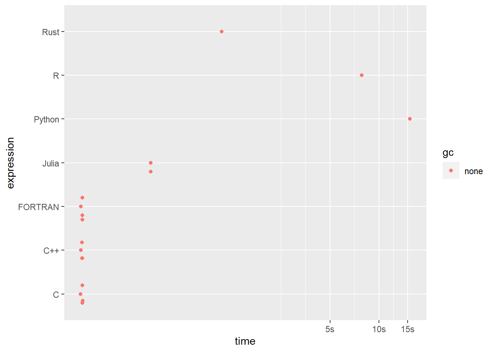

#include <stdio.h>
void pi_approx_c(int *n, double *result) {
double pi_4 = 0;
double sign = 1;
for (int i = 0; i < *n; i++) {
pi_4 += sign / (2 * i + 1);
sign *= -1;
}
*result = 4 * pi_4;
}2.1 Approximating \(\pi\)
It took hundreds of years to precisely approximate the \(\pi\).
I used the Leibniz formula to approximate \(\pi\). It came from an alternating series, a power series of \(\frac{1}{x^2+1}\).
This is how Leibniz formula looks like:
\[ \pi=4\sum_{k = 0}^{\infty} {\frac{(-1)^k}{2k + 1}} \]
We need to adjust a little bit for the programming languages that starts with index-1, namely R, Julia and FORTRAN.
This is how Leibniz formula looks like:
\[ \pi=4\sum_{k = 1}^{\infty} {\frac{(-1)^k}{2k - 1}} \]
If your purpose is a language for fast computation within R, C is maybe easier than C++ but in order this to be working and exportable, the inputs and outputs of the computation were stored in the memory address, a.k.a. the pointers.
In order to wrap the C code into R, use .C and then extract the result via $res.
pi_approx_c <- function(n) {
res <- .C("pi_approx_c", as.integer(n), res=numeric(1))$res
return(res)
}
pi_approx_c(1e5)[1] 3.141583Here, the C++ code is way similar to the C code except, we don’t need to use pointers in order share the results in a memory address, instead we only write the C++ code in a standard way. Like I said, using Rcpp, the C++ code is so easy to be exported, as long as we made it to be error-free.
After compiling, the pi_approx_cpp function will be exported by // [[Rcpp::export]] attributes and saved into R Global Environment directly.
#include <Rcpp.h>
using namespace Rcpp;
// [[Rcpp::export]]
double pi_approx_cpp(int& n) {
double pi_4 = 0;
double sign = 1;
for (int i = 0; i < n; i++) {
pi_4 += sign / (2 * i + 1);
sign *= -1;
}
return 4 * pi_4;
}The C++’s pi_approx_cpp is directly wrapped into R environment without doing an execution to convert the C++ code into binary source code.
pi_approx_cpp(1e5)[1] 3.141583As you can see, we only write few codes, unlike in C/C++, to approximate the \(\pi\)
function pi_approx_jl(n)
pi_4 = 0.0
sign = 1.0
for i in 1:n
pi_4 += sign / (2*i - 1)
sign *= -1
end
return 4 * pi_4
endTo prove that the Julia functioncode is executed, you will receive a message “pi_approx_jl (generic function with 1 method)”. And you are now ready to wrap it into R.
With JuliaCall, you can wrap the Julia function into R via julia_eval. But there are few other ways to call it, but I found julia_eval more convenient.
(Note: If you are already familiar with reticulate, this is the same as py_eval)
pi_approx_jl <- JuliaCall::julia_eval("pi_approx_jl")
pi_approx_jl(1e5)[1] 3.141583Here, we use the extendr and #[extendr] attribute API to write a Rust code and compile it into R, just like we did with Rcpp to compile the C++ code into R
use extendr_api::prelude::*;
#[extendr]
fn pi_approx_rs(n: i32) -> f64 {
let mut pi_4 = 0.0;
let mut sign = 1.0;
for i in 0..n {
pi_4 += sign / (2 * i + 1) as f64;
sign *= -1.0;
}
4.0 * pi_4
}After compiling, just like C++, the pi_approx_rs function in Rust will be wrapped and saved into R Global Environment directly.
pi_approx_rs(1e5)[1] 3.141583Maybe FORTRAN is fast, but the solution is more boilerplate, although for me it is more readable compared to C/C++. Just like C, we need the result to be store in memory address.
If you use old FORTRAN version, you might need to CAPITALIZE the FORTRAN program. But we use the ’95 version of FORTRAN so we don’t need to CAPITALIZE the program.
(It is still a code block even if the FORTRAN code is text-based)
subroutine pi_approx(n, result)
implicit none
integer, intent(in) :: n
real(8), intent(out) :: result
integer :: i
real(8) :: pi_4, sign
pi_4 = 0.0
sign = 1.0
do i = 1, n
pi_4 = pi_4 + sign / (2 * i - 1)
sign = sign * (-1.0)
end do
result = 4 * pi_4
end subroutine pi_approxJust like C, but instead, in order to natively call the FORTRAN code into R, use .Fortran to call the binary source code of FORTRAN’s pi_approx and then extract the result via $result.
pi_approx_fortran <- function(n) {
result <- .Fortran("pi_approx", as.integer(n), result=double(1))$result
return(result)
}
pi_approx_fortran(1e5)[1] 3.141583R is so close to be functional programming and to be Domain Specific Language (or DSL). It is so functional, you need to use <- function() to define a function and I sometimes agree that this is ugly but hey it works! This is just my opinion.
R is already a default language in RStudio, so the function we define is already callable in R Global Environment.
pi_approx_r <- function(n) {
pi_4 <- 0
sign <- 1
for (i in 1:n) {
pi_4 <- pi_4 + sign / (2*i - 1)
sign <- sign * -1
}
return(4 * pi_4)
}
pi_approx_r(1e5)[1] 3.141583R and Python has so much similarities, except Python is more onto general purpose language.
def pi_approx_py(n):
n = int(n)
pi_4 = 0
sign = 1
for i in range(n):
pi_4 += sign / (2 * i + 1)
sign *= -1
return pi_4 * 4The defined function in Python is also callable. Using py module in reticulate package, you can easily interact with any Python objects in Python module.
pi_approx_py <- reticulate::py$pi_approx_py
pi_approx_py(1e5)[1] 3.141583Benchmarks
The benchmarks are the same when I capture the date and time, similar to Sys.time in R. For example, when I run the Python code for \(\pi\) approximation (same code as example) and benchmark it with time module for the first time, I got a difference of 17 seconds. Plus, the mark function from bench package is so precise that I use this package everytime when I benchmark the codes.
pi_approx_bm <- bench::mark(
C = pi_approx_c(1e8),
`C++` = pi_approx_cpp(1e8),
Julia = pi_approx_jl(1e8),
Rust = pi_approx_rs(1e8),
FORTRAN = pi_approx_fortran(1e8),
R = pi_approx_r(1e8),
Python = pi_approx_py(1e8),
check = F
)
pi_approx_bm# A tibble: 7 × 6
expression min median `itr/sec` mem_alloc `gc/sec`
<bch:expr> <bch:tm> <bch:tm> <dbl> <bch:byt> <dbl>
1 C 153.19ms 158.88ms 6.31 16.46KB 0
2 C++ 150.8ms 156.85ms 6.39 7.67KB 0
3 Julia 415.62ms 423.33ms 2.36 5.73KB 0
4 Rust 1.23s 1.23s 0.815 4.8KB 0
5 FORTRAN 156.47ms 157.71ms 6.33 16.46KB 0
6 R 11.64s 11.64s 0.0859 0B 0
7 Python 22.34s 22.34s 0.0448 4.98KB 0pi_approx_bm |> plot()Loading required namespace: tidyr
From this result, we can say that the C++ is the fastest language among the 7 languages I selected for computing in using for loops, following with C and FORTRAN.